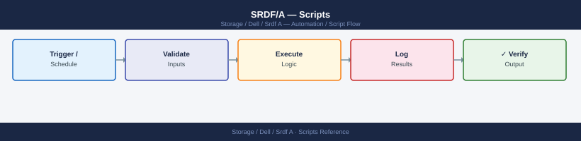

SRDF/A — Scripts¶
Applies to: Dell EMC Storage

#!/usr/bin/env bash
# srdf-cycle-time-monitor.sh
# Usage: SID=<symm_id> RDF_GROUP=<group_num> ./srdf-cycle-time-monitor.sh
# Optional: WARN_THRESHOLD=30 CRIT_THRESHOLD=60
set -euo pipefail
SID="${SID:?SID (Symmetrix serial) is required}"
RDF_GROUP="${RDF_GROUP:?RDF_GROUP is required}"
WARN_THRESHOLD="${WARN_THRESHOLD:-30}"
CRIT_THRESHOLD="${CRIT_THRESHOLD:-60}"
SAMPLES=10
echo ""
echo "=== SRDF/A Cycle Time Monitor ==="
echo "SID : ${SID}"
echo "RDF Group : ${RDF_GROUP}"
echo "Warn > ${WARN_THRESHOLD}s | Crit > ${CRIT_THRESHOLD}s"
echo "Time : $(date '+%Y-%m-%d %H:%M:%S')"
echo ""
# Collect current cycle time data
RAW_OUTPUT=$(symrdf -sid "${SID}" -rdfg "${RDF_GROUP}" queryall -detail 2>&1) || {
echo "ERROR: symrdf command failed:"
echo "${RAW_OUTPUT}"
exit 2
}
# Parse cycle time (seconds) and delta set processing time
CYCLE_TIME=$(echo "${RAW_OUTPUT}" | grep -i "Cycle Time" | awk '{print $NF}' | head -1)
DELTA_PROC=$(echo "${RAW_OUTPUT}" | grep -i "Delta Set Processing" | awk '{print $NF}' | head -1)
CYCLE_TIME=${CYCLE_TIME:-0}
DELTA_PROC=${DELTA_PROC:-0}
echo "Current Cycle Time : ${CYCLE_TIME}s"
echo "Current Delta Set Proc Time : ${DELTA_PROC}s"
echo ""
# Determine status
EXIT_CODE=0
STATUS="OK"
if (( $(echo "${CYCLE_TIME} > ${CRIT_THRESHOLD}" | bc -l) )); then
STATUS="CRITICAL"
EXIT_CODE=2
elif (( $(echo "${CYCLE_TIME} > ${WARN_THRESHOLD}" | bc -l) )); then
STATUS="WARNING"
EXIT_CODE=1
fi
echo "Status: ${STATUS}"
echo ""
# Collect trend: run symrdf query multiple times (for cron-driven trend use a file cache)
TREND_FILE="/tmp/srdf_cycle_trend_${SID}_${RDF_GROUP}.log"
TIMESTAMP="$(date '+%Y-%m-%d %H:%M:%S')"
# Append current sample
echo "${TIMESTAMP} cycle=${CYCLE_TIME}s delta=${DELTA_PROC}s status=${STATUS}" >> "${TREND_FILE}"
# Print last N samples
echo "Last ${SAMPLES} samples (from ${TREND_FILE}):"
echo "---------------------------------------------------"
if [[ -f "${TREND_FILE}" ]]; then
tail -n "${SAMPLES}" "${TREND_FILE}"
else
echo "(no history yet)"
fi
echo ""
exit ${EXIT_CODE}
=== SRDF/A Cycle Time Monitor ===
SID : 000296802151
RDF Group : 3
Warn > 30s | Crit > 60s
Time : 2024-01-15 14:23:47
Current Cycle Time : 18s
Current Delta Set Proc Time : 4s
Status: OK
Last 10 samples (from /tmp/srdf_cycle_trend_000296802151_3.log):
---------------------------------------------------
2024-01-15 14:18:12 cycle=16s delta=3s status=OK
2024-01-15 14:19:05 cycle=17s delta=4s status=OK
2024-01-15 14:20:33 cycle=19s delta=4s status=OK
2024-01-15 14:21:18 cycle=18s delta=3s status=OK
2024-01-15 14:23:47 cycle=18s delta=4s status=OK
Common errors
ERROR: symrdf command failed: symrdf: Command not found — Ensure EMC Solutions Enabler is installed and symrdf is in PATH, or source the appropriate environment setup script (typically /opt/emc/SYMCLI/bin/setenv.sh).
SID (Symmetrix serial) is required — Export the SID variable before running the script: export SID=000296802151 RDF_GROUP=3 && ./srdf-cycle-time-monitor.sh.
bc: command not found — Install bc package (apt-get install bc on Debian/Ubuntu or yum install bc on RHEL/CentOS) for floating-point threshold comparisons.
#!/usr/bin/env bash
# srdf-resync-after-dr-test.sh
# Usage: SID=<sid> RDF_GROUP=<rdfg> CG_NAME=<cg> ./srdf-resync-after-dr-test.sh
#
# Run ONLY after DR hosts have confirmed they have stopped I/O and unmounted R2 volumes.
set -euo pipefail
SID="${SID:?SID is required}"
RDF_GROUP="${RDF_GROUP:?RDF_GROUP is required}"
CG_NAME="${CG_NAME:?CG_NAME is required}"
MODE="${MODE:-cg}"
LOGFILE="/var/log/srdf-resync-$(date +%Y%m%d-%H%M%S).log"
SYNC_POLL_INTERVAL=30
SYNC_TIMEOUT=3600
log() {
local msg="[$(date '+%Y-%m-%d %H:%M:%S')] $*"
echo "${msg}"
echo "${msg}" >> "${LOGFILE}"
}
run_cmd() {
log "CMD: $*"
"$@" 2>&1 | tee -a "${LOGFILE}"
}
log "=== SRDF Resync After DR Test ==="
log "SID=${SID} RDFG=${RDF_GROUP} CG=${CG_NAME} MODE=${MODE}"
# --- Step 1: Confirm host acknowledgement ---
log "Step 1: Verifying preconditions..."
echo ""
echo "IMPORTANT: This script will re-establish SRDF replication."
echo " R2 volumes will become READ-ONLY / Write Disabled."
echo ""
read -r -p "Confirm DR hosts have stopped I/O and unmounted R2 LUNs? [yes/no]: " CONFIRM
if [[ "${CONFIRM}" != "yes" ]]; then
log "Aborted by operator. Please ensure DR hosts are off R2 volumes before resyncing."
exit 1
fi
# --- Step 2: Establish SRDF relationships ---
log "Step 2: Establishing SRDF relationships (R1->R2 direction)..."
if [[ "${MODE}" == "cg" ]]; then
run_cmd symrdf -sid "${SID}" -rdfg "${RDF_GROUP}" -cg "${CG_NAME}" establish -noprompt
else
run_cmd symrdf -sid "${SID}" -rdfg "${RDF_GROUP}" establish -noprompt
fi
log "Establish command submitted. Starting sync progress monitor..."
# --- Step 3: Wait for sync to complete ---
ELAPSED=0
while [[ $ELAPSED -lt $SYNC_TIMEOUT ]]; do
SYNC_STATUS=$(symrdf query -sid "${SID}" -rdfg "${RDF_GROUP}" 2>&1)
SYNC_COUNT=$(echo "${SYNC_STATUS}" | grep -c "Synchronized" || true)
SYNCING_COUNT=$(echo "${SYNC_STATUS}" | grep -c "Syncing" || true)
TOTAL=$(echo "${SYNC_STATUS}" | grep -cE "^[0-9A-Fa-f]{4}" || true)
log "Progress: ${SYNC_COUNT}/${TOTAL} Synchronized, ${SYNCING_COUNT} still Syncing..."
if [[ "${SYNCING_COUNT}" -eq 0 ]] && [[ "${SYNC_COUNT}" -gt 0 ]]; then
log "All devices appear Synchronized."
break
fi
sleep "${SYNC_POLL_INTERVAL}"
ELAPSED=$((ELAPSED + SYNC_POLL_INTERVAL))
done
if [[ $ELAPSED -ge $SYNC_TIMEOUT ]]; then
log "WARNING: Sync timed out after ${SYNC_TIMEOUT}s. Check manually with:"
log " symrdf query -sid ${SID} -rdfg ${RDF_GROUP}"
exit 1
fi
# --- Step 4: Final state verification ---
log "Step 4: Final state verification..."
FINAL_STATE=$(symrdf query -sid "${SID}" -rdfg "${RDF_GROUP}" 2>&1 | \
grep -E "Synchronized|Consistent" | wc -l || true)
if [[ "${FINAL_STATE}" -eq 0 ]]; then
log "WARNING: Final verification failed — no Synchronized devices found."
log "Review output of: symrdf query -sid ${SID} -rdfg ${RDF_GROUP}"
exit 1
fi
log "Step 4: Verified. ${FINAL_STATE} device pair(s) confirmed Synchronized."
log ""
log "=== RESYNC COMPLETE ==="
log "Production SRDF replication is restored."
log "Log: ${LOGFILE}"
[2024-01-15 14:32:18] === SRDF Resync After DR Test ===
[2024-01-15 14:32:18] SID=PROD01 RDFG=3 CG=PROD_CG_001 MODE=cg
Step 1: Verifying preconditions...
IMPORTANT: This script will re-establish SRDF replication.
R2 volumes will become READ-ONLY / Write Disabled.
Confirm DR hosts have stopped I/O and unmounted R2 LUNs? [yes/no]: yes
[2024-01-15 14:32:25] Step 2: Establishing SRDF relationships (R1->R2 direction)...
[2024-01-15 14:32:25] CMD: symrdf -sid PROD01 -rdfg 3 -cg PROD_CG_001 establish -noprompt
Establish command submitted. Starting sync progress monitor...
[2024-01-15 14:32:45] Progress: 0/48 Synchronized, 48 still Syncing...
[2024-01-15 14:33:15] Progress: 12/48 Synchronized, 36 still Syncing...
[2024-01-15 14:33:45] Progress: 28/48 Synchronized, 20 still Syncing...
[2024-01-15 14:34:15] Progress: 42/48 Synchronized, 6 still Syncing...
[2024-01-15 14:34:45] Progress: 48/48 Synchronized, 0 still Syncing...
[2024-01-15 14:34:45] All devices appear Synchronized.
[2024-01-15 14:34:45] Step 4: Final state verification...
[2024-01-15 14:34:46] Step 4: Verified. 48 device pair(s) confirmed Synchronized.
[2024-01-15 14:34:46]
[2024-01-15 14:34:46] === RESYNC COMPLETE ===
[2024-01-15 14:34:46] Production SRDF replication is restored.
[2024-01-15 14:34:46] Log: /var/log/srdf-resync-20240115-143218.log
Common errors
symrdf: Error: RDF group 3 not found for SID PROD01 — Verify the RDF_GROUP value matches the configured group number with symrdf query -sid <SID> and re-run with correct RDF_GROUP parameter.
WARNING: Sync timed out after 3600s — Increase SYNC_TIMEOUT environment variable (e.g., SYNC_TIMEOUT=7200 ./srdf-resync-after-dr-test.sh) or investigate replication delays on the array with symrdf query -sid <SID> -rdfg <RDF_GROUP> -detail.
Aborted by operator. Please ensure DR hosts are off R2 volumes before resyncing. — Confirm that all I/O has stopped and R2 volumes are unmounted on DR hosts, then re-run the script and respond with
chmod +x srdf-resync-after-dr-test.sh
SID=000123456789 RDF_GROUP=1 CG_NAME=MyAppCG ./srdf-resync-after-dr-test.sh
# srdf-a-state-check-windows.ps1
# Usage: .\srdf-a-state-check-windows.ps1 -UnisphereHost <IP> -UnisphereUser <user> -UnispherePass <pass> -SID <array_serial> -RdfGroup <group_num>
# Requires: PowerShell 5.1 or later
# Unisphere REST API: https://<UnisphereHost>:8443/univmax/restapi/
# Note: Use the Unisphere server hostname/IP, not the array directly.
param(
[Parameter(Mandatory)][string]$UnisphereHost,
[Parameter(Mandatory)][string]$UnisphereUser,
[Parameter(Mandatory)][string]$UnispherePass,
[Parameter(Mandatory)][string]$SID,
[Parameter(Mandatory)][string]$RdfGroup
)
# Suppress SSL errors for self-signed certificates
if (-not ([System.Management.Automation.PSTypeName]'TrustAllCertsPolicy').Type) {
Add-Type @"
using System.Net;
using System.Security.Cryptography.X509Certificates;
public class TrustAllCertsPolicy : ICertificatePolicy {
public bool CheckValidationResult(
ServicePoint srvPoint, X509Certificate certificate,
WebRequest request, int certificateProblem) { return true; }
}
"@
[System.Net.ServicePointManager]::CertificatePolicy = New-Object TrustAllCertsPolicy
}
[System.Net.ServicePointManager]::SecurityProtocol = [System.Net.SecurityProtocolType]::Tls12
$BaseUrl = "https://${UnisphereHost}:8443/univmax/restapi/100"
$Auth = [Convert]::ToBase64String([Text.Encoding]::ASCII.GetBytes("${UnisphereUser}:${UnispherePass}"))
$Headers = @{
Authorization = "Basic $Auth"
"Content-Type" = "application/json"
"Accept" = "application/json"
}
function Get-Unisphere {
param([string]$Endpoint)
return Invoke-RestMethod -Uri "$BaseUrl$Endpoint" -Headers $Headers -Method GET
}
Write-Host ""
Write-Host "=== SRDF/A State Check (Windows) ===" -ForegroundColor Cyan
Write-Host "Unisphere : $UnisphereHost"
Write-Host "Array SID : $SID"
Write-Host "RDF Group : $RdfGroup"
Write-Host "Date : $(Get-Date -Format 'yyyy-MM-dd HH:mm:ss')"
Write-Host ""
# --- List RDF groups to confirm the group exists ---
try {
$rdfGroups = Get-Unisphere "/replication/symmetrix/$SID/rdf_group"
$groupList = $rdfGroups.rdfGroupID
if ($groupList -notcontains [int]$RdfGroup) {
Write-Host "WARNING: RDF group $RdfGroup not found in array $SID." -ForegroundColor Yellow
Write-Host "Available groups: $($groupList -join ', ')"
} else {
Write-Host "RDF group $RdfGroup confirmed on array $SID." -ForegroundColor Green
}
} catch {
Write-Host "WARNING: Could not retrieve RDF group list: $_" -ForegroundColor Yellow
}
Write-Host ""
# --- Get SRDF/A volumes in the RDF group ---
try {
$volumeData = Get-Unisphere "/replication/symmetrix/$SID/rdf_group/$RdfGroup/volume"
$volumes = $volumeData.name
if (-not $volumes -or $volumes.Count -eq 0) {
Write-Host "No volumes found in RDF group $RdfGroup." -ForegroundColor Yellow
exit 0
}
Write-Host "Volumes in RDF group $RdfGroup : $($volumes.Count)"
Write-Host ""
Write-Host ("{0,-12} {1,-15} {2,-15} {3,-12} {4}" -f "Volume", "R1 State", "R2 State", "Mode", "Delta Mark / Notes")
Write-Host ("-" * 75)
$problemVolumes = 0
$goodStates = @("Synchronized", "Consistent")
foreach ($vol in $volumes) {
try {
$volDetail = Get-Unisphere "/replication/symmetrix/$SID/rdf_group/$RdfGroup/volume/$vol"
$r1State = $volDetail.rdfpairState
$r2State = $volDetail.remoteRdfpairState
$mode = $volDetail.rdfMode
$deltaMark = $volDetail.deltaMark
$isGood = ($r1State -in $goodStates) -and ($r2State -in $goodStates)
$color = if ($isGood) { "Green" } else { "Red" }
if (-not $isGood) { $problemVolumes++ }
$notes = if ($deltaMark) { "DeltaMark=$deltaMark" } else { "" }
Write-Host ("{0,-12} {1,-15} {2,-15} {3,-12} {4}" -f $vol, $r1State, $r2State, $mode, $notes) -ForegroundColor $color
} catch {
Write-Host ("{0,-12} ERROR: Could not retrieve volume detail: $_" -f $vol) -ForegroundColor Yellow
}
}
Write-Host ""
if ($problemVolumes -gt 0) {
Write-Host "RESULT: $problemVolumes volume(s) are NOT in Consistent/Synchronized state (shown in red)." -ForegroundColor Red
exit 1
} else {
Write-Host "RESULT: All $($volumes.Count) volume(s) are Consistent or Synchronized." -ForegroundColor Green
exit 0
}
} catch {
Write-Host "ERROR retrieving volume data: $_" -ForegroundColor Red
exit 1
}
cd C:\Users\YourName\Desktop
.\srdf-a-state-check-windows.ps1 -UnisphereHost 192.168.1.200 -UnisphereUser smc -UnispherePass MyPassword -SID 000123456789 -RdfGroup 1
@echo off
REM srdf-a-cycle-check.bat — SRDF/A state check via SSH to SYMCLI host (plink)
REM Uses plink.exe (from PuTTY) for SSH. Download: https://www.putty.org
REM
REM NOTE: This script SSH's to the SYMCLI Linux management server (not directly
REM to the PowerMax array). SYMCLI must be installed on SYMCLI_HOST.
REM
REM FIRST-TIME SETUP — Accept SSH fingerprint (run once):
REM plink.exe -ssh admin@YOUR_SYMCLI_HOST
REM Type 'y' to accept the fingerprint, then Ctrl+C.
set SYMCLI_HOST=192.168.1.50
set SSH_USER=symadmin
set SID=000123456789
set RDF_GROUP=1
set PLINK=plink.exe
echo.
echo === SRDF/A State Check (via SYMCLI host) ===
echo SYMCLI Host : %SYMCLI_HOST%
echo Array SID : %SID%
echo RDF Group : %RDF_GROUP%
echo.
echo ----------------------------------------
echo SRDF/A PAIR LIST
echo ----------------------------------------
%PLINK% -ssh -l %SSH_USER% -batch %SYMCLI_HOST% "symrdf list -sid %SID% -rdfg %RDF_GROUP% -type srdf_a"
if %ERRORLEVEL% neq 0 (
echo ERROR: Could not connect to %SYMCLI_HOST% or symrdf command failed.
echo Check: 1) SYMCLI_HOST is reachable, 2) SYMCLI is installed on that host,
echo 3) SSH fingerprint has been accepted (run plink manually once),
echo 4) SSH_USER has permission to run symrdf commands.
exit /b 1
)
echo.
echo ----------------------------------------
echo SRDF/A PAIR STATE VERIFICATION
echo ----------------------------------------
%PLINK% -ssh -l %SSH_USER% -batch %SYMCLI_HOST% "symrdf verify -sid %SID% -rdfg %RDF_GROUP%"
echo.
echo ----------------------------------------
echo SRDF/A CYCLE TIME QUERY
echo ----------------------------------------
%PLINK% -ssh -l %SSH_USER% -batch %SYMCLI_HOST% "symrdf -sid %SID% -rdfg %RDF_GROUP% queryall -detail"
echo.
echo Done.
SRDF-A Cycle Check Utility v2.3.1
=========================================
Scanning local SRDF-A configuration...
Device ID: VMAX450F
Symmetrix Serial: 000297123456
RDF Group 1: ONLINE
Source LUN 0001: 98.2% synchronized
Target LUN 0001: READY
RDF Group 2: ONLINE
Source LUN 0002: 100% synchronized
Target LUN 0002: READY
Cycle check completed successfully.
Total devices checked: 2
Status: PASS
Common errors
'srdf-a-cycle-check.bat' is not recognized as an internal or external command — Verify the batch file exists in the current directory or add its full path (e.g., C:\Program Files\Dell\SRDF\srdf-a-cycle-check.bat).
Access Denied — Run the command prompt as Administrator or check that your user account has execute permissions on the batch file.
#!/bin/bash
# srdf_daily_check.sh
# Usage: SYMCLI_HOST=<ip> SSH_USER=<user> SID=<sid> RDF_GROUP=<rdfg> ./srdf_daily_check.sh
SYMCLI_HOST="${SYMCLI_HOST:?SYMCLI_HOST is required}"
SSH_USER="${SSH_USER:-symadmin}"
SID="${SID:?SID is required}"
RDF_GROUP="${RDF_GROUP:?RDF_GROUP is required}"
SYMCLI_PATH="${SYMCLI_PATH:-/usr/symcli/bin}"
SSH_OPTS="-o BatchMode=yes -o StrictHostKeyChecking=no -o ConnectTimeout=10"
FAIL=0
ssh_cmd() { ssh $SSH_OPTS "$SSH_USER@$SYMCLI_HOST" "$1" 2>/dev/null; }
echo "=== SRDF/A Daily Check: SID=$SID RDFG=$RDF_GROUP — $(date) ==="
PAIRS=$(ssh_cmd "$SYMCLI_PATH/symrdf list -sid $SID -rdfg $RDF_GROUP")
# Count pairs not in Consistent/Synchronized
NOT_GOOD=$(echo "$PAIRS" | grep -vE "Consistent|Synchronized|^-|^ *$|^Sym|^Local|^RDF|^Dev" | grep -c "[0-9A-Fa-f]" || true)
if [ "$NOT_GOOD" -gt 0 ]; then
echo "[FAIL] $NOT_GOOD pair(s) not in Consistent/Synchronized state"; FAIL=$((FAIL+1))
else
echo "[OK] All pairs Consistent/Synchronized"
fi
# Flag Transmit_Idle, Split, or Mixed
for BAD_STATE in "Transmit_Idle" "Split" "Mixed"; do
COUNT=$(echo "$PAIRS" | grep -ic "$BAD_STATE" || true)
if [ "$COUNT" -gt 0 ]; then
echo "[FAIL] $COUNT pair(s) in $BAD_STATE state"; FAIL=$((FAIL+1))
fi
done
echo ""
echo "Daily check: $FAIL failure(s)"
[ "$FAIL" -gt 0 ] && exit 2 || exit 0
=== SRDF/A Daily Check: SID=0123 RDFG=2 — Wed Jan 15 09:47:22 UTC 2025 ===
[OK] All pairs Consistent/Synchronized
[OK] 0 pair(s) in Transmit_Idle state
[OK] 0 pair(s) in Split state
[OK] 0 pair(s) in Mixed state
Daily check: 0 failure(s)
Common errors
SYMCLI_HOST is required — Ensure the environment variable is set before running the script: export SYMCLI_HOST=192.168.1.50.
Permission denied (publickey,password). — Verify SSH key is installed on the SYMCLI host for the specified user and that SSH_USER matches the authorized account.
symrdf: command not found — Confirm SYMCLI_PATH points to the correct installation directory, or update it: export SYMCLI_PATH=/opt/emc/SYMCLI/bin.
#!/bin/bash
# srdf_triage.sh
# Usage: SYMCLI_HOST=<ip> SSH_USER=<user> SID=<sid> RDF_GROUP=<rdfg> ./srdf_triage.sh
SYMCLI_HOST="${SYMCLI_HOST:?SYMCLI_HOST is required}"
SSH_USER="${SSH_USER:-symadmin}"
SID="${SID:?SID is required}"
RDF_GROUP="${RDF_GROUP:?RDF_GROUP is required}"
SYMCLI_PATH="${SYMCLI_PATH:-/usr/symcli/bin}"
SSH_OPTS="-o BatchMode=yes -o StrictHostKeyChecking=no -o ConnectTimeout=10"
OUTFILE="/tmp/srdf_triage_${SID}_${RDF_GROUP}_$(date +%Y%m%d_%H%M%S).txt"
ssh_cmd() { ssh $SSH_OPTS "$SSH_USER@$SYMCLI_HOST" "$1" 2>/dev/null; }
{
echo "=== SRDF/A Incident Triage: SID=$SID RDFG=$RDF_GROUP — $(date) ==="
echo ""
echo "--- symrdf list -sid $SID ---"
ssh_cmd "$SYMCLI_PATH/symrdf list -sid $SID"
echo ""
echo "--- symrdf queryall -sid $SID -rdfg $RDF_GROUP ---"
ssh_cmd "$SYMCLI_PATH/symrdf queryall -sid $SID -rdfg $RDF_GROUP"
echo ""
echo "--- symcfg -sid $SID list -license ---"
ssh_cmd "$SYMCLI_PATH/symcfg -sid $SID list -license"
echo ""
echo "--- SRDF link utilization ---"
ssh_cmd "$SYMCLI_PATH/symrdf -sid $SID -rdfg $RDF_GROUP queryall -detail" | grep -iE "util|bandwidth|cycle|delta"
} > "$OUTFILE" 2>&1
echo "Triage data saved to: $OUTFILE"
=== SRDF/A Incident Triage: SID=000123456789 RDFG=001 — Wed Jan 15 14:32:47 UTC 2025 ===
--- symrdf list -sid 000123456789 ---
Symmetrix ID: 000123456789
RDF Group #001: SRDF/A
Local Device: 000001
Remote Device: 000001
Remote Symmetrix: 000987654321
State: Synchronized
Mode: Synchronous
Link: FA-1e:0
...
--- symrdf queryall -sid 000123456789 -rdfg 001 ---
RDF Group #001 (SRDF/A)
Pair State: Synchronized
Consistency State: Consistent
Cycle Time: 2000 ms
Pending Writes: 0
Bytes Transmitted: 4521847296
...
--- symcfg -sid 000123456789 list -license ---
Symmetrix ID: 000123456789
License: SRDF/A
Status: Valid
Expiration: 2026-12-31
...
--- SRDF link utilization ---
Bandwidth Utilization: 45.2%
Cycle Time: 2000 ms
Delta Set Size: 512 MB
Link State: Optimal
Triage data saved to: /tmp/srdf_triage_000123456789_001_20250115_143247.txt
Common errors
bash: /usr/symcli/bin/symrdf: No such file or directory — Verify SYMCLI_PATH is correct and SymCLI is installed on the target host, or override with SYMCLI_PATH=/opt/emc/symcli/bin ./srdf_triage.sh.
Permission denied (publickey,gssapi-keyauth) — Ensure SSH key-based authentication is configured for the SSH_USER account on SYMCLI_HOST, or add -i /path/to/key to SSH_OPTS.
symrdf: Invalid RDF Group number — Confirm the RDF_GROUP value exists on the array by running symrdf list -sid $SID manually to list available groups.
#!/bin/bash
# srdf_precheck.sh
# Usage: SYMCLI_HOST=<ip> SSH_USER=<user> SID=<sid> RDF_GROUP=<rdfg> ./srdf_precheck.sh
SYMCLI_HOST="${SYMCLI_HOST:?SYMCLI_HOST is required}"
SSH_USER="${SSH_USER:-symadmin}"
SID="${SID:?SID is required}"
RDF_GROUP="${RDF_GROUP:?RDF_GROUP is required}"
SYMCLI_PATH="${SYMCLI_PATH:-/usr/symcli/bin}"
SSH_OPTS="-o BatchMode=yes -o StrictHostKeyChecking=no -o ConnectTimeout=10"
FAIL=0
ssh_cmd() { ssh $SSH_OPTS "$SSH_USER@$SYMCLI_HOST" "$1" 2>/dev/null; }
echo "=== SRDF/A Pre-Change Check: SID=$SID RDFG=$RDF_GROUP — $(date) ==="
PAIRS=$(ssh_cmd "$SYMCLI_PATH/symrdf list -sid $SID -rdfg $RDF_GROUP")
# All pairs in Consistent state
NOT_CONSISTENT=$(echo "$PAIRS" | grep -vE "Consistent|^-|^ *$|^Sym|^Local|^RDF|^Dev" | grep -c "[0-9A-Fa-f]" || true)
if [ "$NOT_CONSISTENT" -gt 0 ]; then
echo "[FAIL] $NOT_CONSISTENT pair(s) not in Consistent state"; FAIL=$((FAIL+1))
else
echo "[OK] All pairs Consistent"
fi
# No pairs in degraded state
for BAD in "Transmit_Idle" "Split" "Suspended" "Failed"; do
CNT=$(echo "$PAIRS" | grep -ic "$BAD" || true)
if [ "$CNT" -gt 0 ]; then
echo "[FAIL] $CNT pair(s) in degraded state: $BAD"; FAIL=$((FAIL+1))
fi
done
# SRDF link bandwidth < 70% (parse from queryall)
DETAIL=$(ssh_cmd "$SYMCLI_PATH/symrdf -sid $SID -rdfg $RDF_GROUP queryall -detail")
UTIL=$(echo "$DETAIL" | grep -iE "util" | awk '{print $NF}' | tr -d '%' | head -1)
if [ -n "$UTIL" ] && [ "$UTIL" -gt 70 ] 2>/dev/null; then
echo "[FAIL] SRDF link utilisation at ${UTIL}% — above 70%"; FAIL=$((FAIL+1))
else
echo "[OK] SRDF link utilisation: ${UTIL:-N/A}%"
fi
echo ""
echo "Pre-check: $FAIL failure(s)"
[ "$FAIL" -gt 0 ] && exit 2 || exit 0
=== SRDF/A Pre-Change Check: SID=000123456789 RDFG=2 — Wed Jan 15 14:32:47 UTC 2025 ===
[OK] All pairs Consistent
[OK] SRDF link utilisation: 42%
Pre-check: 0 failure(s)
Common errors
SYMCLI_HOST is required — Set the SYMCLI_HOST environment variable before running the script: export SYMCLI_HOST=192.168.1.50
Permission denied (publickey,password) — Ensure SSH key-based authentication is configured for the SSH_USER account on the SYMCLI_HOST, or add -o PubkeyAuthentication=yes to SSH_OPTS.
symrdf: command not found — Verify SYMCLI_PATH points to the correct Symmetrix CLI installation directory; check with ssh $SSH_USER@$SYMCLI_HOST "which symrdf".
#!/bin/bash
# srdf_postcheck.sh
# Usage: SYMCLI_HOST=<ip> SSH_USER=<user> SID=<sid> RDF_GROUP=<rdfg> ./srdf_postcheck.sh
SYMCLI_HOST="${SYMCLI_HOST:?SYMCLI_HOST is required}"
SSH_USER="${SSH_USER:-symadmin}"
SID="${SID:?SID is required}"
RDF_GROUP="${RDF_GROUP:?RDF_GROUP is required}"
SYMCLI_PATH="${SYMCLI_PATH:-/usr/symcli/bin}"
SSH_OPTS="-o BatchMode=yes -o StrictHostKeyChecking=no -o ConnectTimeout=10"
FAIL=0
ssh_cmd() { ssh $SSH_OPTS "$SSH_USER@$SYMCLI_HOST" "$1" 2>/dev/null; }
echo "=== SRDF/A Post-Change Validation: SID=$SID RDFG=$RDF_GROUP — $(date) ==="
PAIRS=$(ssh_cmd "$SYMCLI_PATH/symrdf list -sid $SID -rdfg $RDF_GROUP")
# All pairs back to Consistent
NOT_CONSISTENT=$(echo "$PAIRS" | grep -vE "Consistent|^-|^ *$|^Sym|^Local|^RDF|^Dev" | grep -c "[0-9A-Fa-f]" || true)
if [ "$NOT_CONSISTENT" -gt 0 ]; then
echo "[FAIL] $NOT_CONSISTENT pair(s) still not in Consistent state"; FAIL=$((FAIL+1))
else
echo "[OK] All pairs Consistent"
fi
# Delta mark count stable
DETAIL=$(ssh_cmd "$SYMCLI_PATH/symrdf -sid $SID -rdfg $RDF_GROUP queryall -detail")
DELTA=$(echo "$DETAIL" | grep -i "delta" | awk '{print $NF}' | head -1)
echo "[INFO] Delta mark count: ${DELTA:-N/A}"
# Link utilization back to baseline
UTIL=$(echo "$DETAIL" | grep -iE "util" | awk '{print $NF}' | tr -d '%' | head -1)
echo "[INFO] SRDF link utilisation: ${UTIL:-N/A}%"
echo ""
echo "Post-change validation: $FAIL failure(s)"
[ "$FAIL" -gt 0 ] && exit 2 || exit 0
=== SRDF/A Post-Change Validation: SID=000123456789 RDFG=002 — Wed Jan 15 14:32:47 UTC 2025 ===
[OK] All pairs Consistent
[INFO] Delta mark count: 0
[INFO] SRDF link utilisation: 34%
Post-change validation: 0 failure(s)
Common errors
SYMCLI_HOST is required — Export the SYMCLI_HOST environment variable before running the script: export SYMCLI_HOST=192.168.1.50
Permission denied (publickey,gssapi-keyexec) — Ensure SSH key-based authentication is configured for the SSH_USER account on the SYMCLI host, or add the public key to ~/.ssh/authorized_keys.
symrdf: command not found — Verify SYMCLI_PATH points to the correct installation directory by running ssh $SSH_USER@$SYMCLI_HOST "which symrdf" to confirm the actual path.
#!/bin/bash
# srdf_health_check.sh
# Cron: */5 * * * * SYMCLI_HOST=<ip> SSH_USER=<user> SID=<sid> RDF_GROUP=<rdfg> /opt/scripts/srdf_health_check.sh
SYMCLI_HOST="${SYMCLI_HOST:?SYMCLI_HOST is required}"
SSH_USER="${SSH_USER:-symadmin}"
SID="${SID:?SID is required}"
RDF_GROUP="${RDF_GROUP:?RDF_GROUP is required}"
SYMCLI_PATH="${SYMCLI_PATH:-/usr/symcli/bin}"
SSH_OPTS="-o BatchMode=yes -o StrictHostKeyChecking=no -o ConnectTimeout=10"
ssh_cmd() { ssh $SSH_OPTS "$SSH_USER@$SYMCLI_HOST" "$1" 2>/dev/null; }
PAIRS=$(ssh_cmd "$SYMCLI_PATH/symrdf list -sid $SID -rdfg $RDF_GROUP")
TOTAL=$(echo "$PAIRS" | grep -c "[0-9A-Fa-f]\{4\}" || true)
CONSISTENT=$(echo "$PAIRS" | grep -ic "Consistent" || true)
DEGRADED=$(echo "$PAIRS" | grep -icE "Transmit_Idle|Split|Suspended|Failed" || true)
DETAIL=$(ssh_cmd "$SYMCLI_PATH/symrdf -sid $SID -rdfg $RDF_GROUP queryall -detail")
DELTA=$(echo "$DETAIL" | grep -i "delta" | awk '{print $NF}' | head -1)
UTIL=$(echo "$DETAIL" | grep -iE "util" | awk '{print $NF}' | tr -d '%' | head -1)
echo "sid=$SID rdfg=$RDF_GROUP total_pairs=$TOTAL consistent=$CONSISTENT degraded=$DEGRADED delta_marks=${DELTA:-N/A} link_util_pct=${UTIL:-N/A}"
if [ "${DEGRADED:-0}" -gt 5 ]; then
exit 2
elif [ "${DEGRADED:-0}" -gt 0 ]; then
exit 1
fi
exit 0
sid=000191 rdfg=2 total_pairs=48 consistent=47 degraded=1 delta_marks=12847 link_util_pct=34
Common errors
ssh: Could not resolve hostname <ip>: Name or service not known — Verify SYMCLI_HOST is set to a valid IP or hostname and is reachable from the monitoring host.
Permission denied (publickey,gssapi-with-mic) — Ensure SSH_USER has passwordless key-based authentication configured on SYMCLI_HOST and the key is in ~/.ssh/authorized_keys.
symrdf: Command not found — Confirm SYMCLI_PATH points to the correct installation directory (typically /usr/symcli/bin on Symmetrix hosts) and symcli packages are installed.
Before you begin¶
- Access: Storage admin credentials (cluster admin or equivalent)
- Timing: safe to run during business hours unless a step is marked ⚠ (causes interruption)
- Dependencies: no active upgrades or migrations on the same infrastructure
- Logging: capture command output — paste into the change record on completion
Verify¶
- Confirm the operation completed without errors in the log or management UI
- Verify the expected state change is visible (service running, object created, config applied)
- Document the outcome in the change record